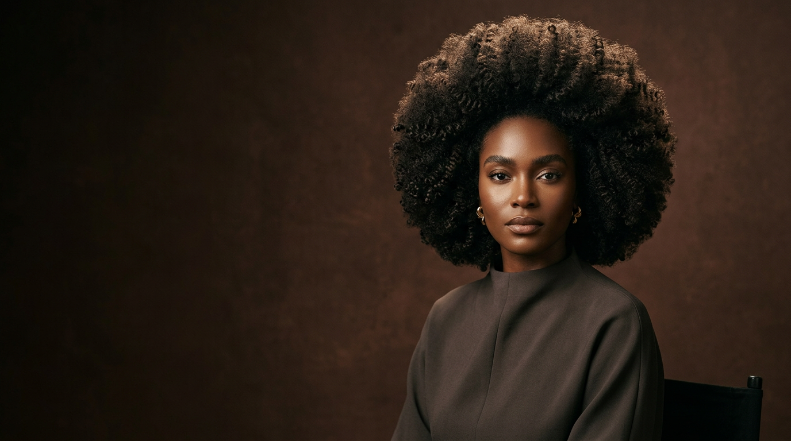
Where Curl Becomes Verse
I started this journey not with a comb, but with a question: what does it mean to wear your truth on the outside? Every strand carries a story. Every curl is a verse written by nature, untamed and unapologetic. This is not a salon. This is a sanctuary.
The Texture Poet — World 06What We Believe
We do not tame. We do not flatten. We do not apologize for volume, for coil, for the way hair takes up space in a world that asks it to shrink.
Texture is not a trend. It is a lineage. It is your grandmother’s hands braiding in the kitchen light. It is the way your mother touched your crown and said, “You are beautiful.”
At The Texture Poet, we believe every curl pattern is a fingerprint of the soul. Type 3a is not “better” than 4c. They are different poems in the same language.
— The Texture Poet
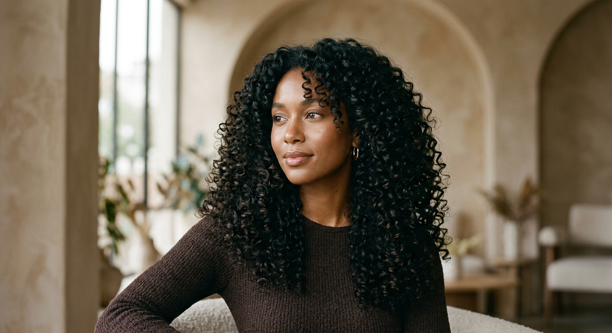
Raw Beauty
Texture is not a problem to be solved. It is a language to be spoken. In every coil and wave, there is rhythm—a cadence that belongs only to the wearer. We listen to that rhythm before we ever touch a strand.
Our hands are trained to read texture like braille. Each curl pattern tells us what it needs: moisture, shape, time. We give it all three without hurry.
Texture Unfiltered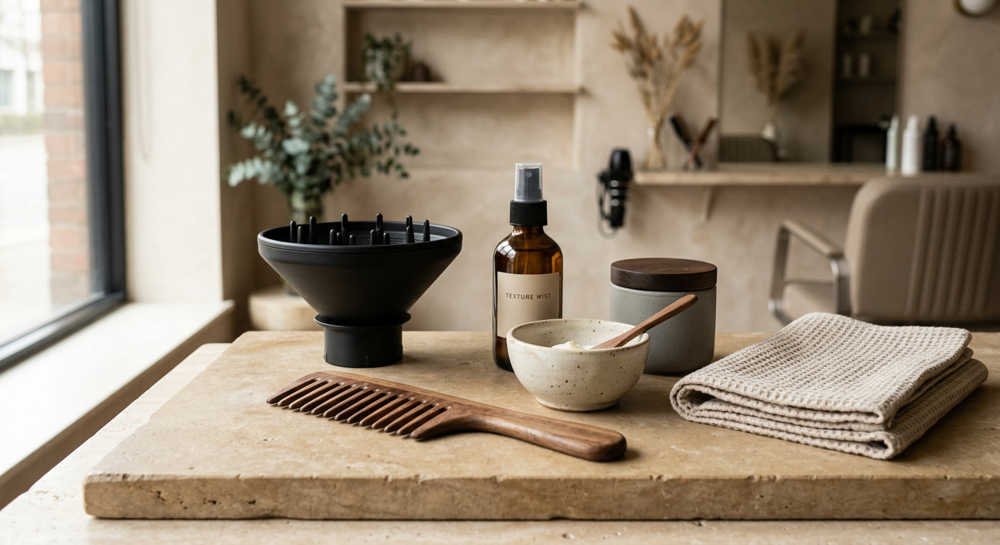
Sacred Curls
The crown collection is not about adornment. It is about recognition—seeing the divine in the way hair spirals upward, reaching, always reaching. These are the moments when hair stops being hair and becomes architecture, becomes sculpture, becomes prayer.
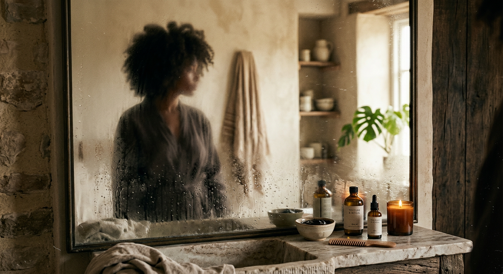
Poetry in Motion
Watch how curls move when freed. They bounce, they cascade, they catch light like water. There is choreography in every gesture—a dance that begins at the scalp and ends at the shoulders. We do not style hair. We choreograph movement.
The way a curl falls when you shake your head is the most honest thing in the world. We protect that honesty.
Movement & Flow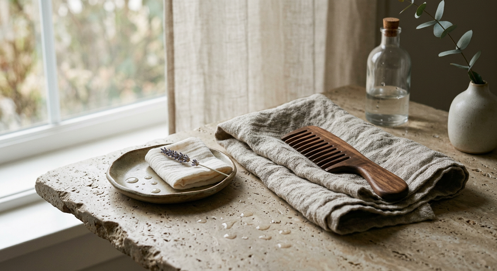
The Ritual
Every crown deserves a ceremony. Five sacred steps that transform the ordinary into the eternal. We do not rush. We do not skip. We honor the process because the process honors the hair.
Each step is a conversation between our hands and your texture. We listen. We respond. We create.
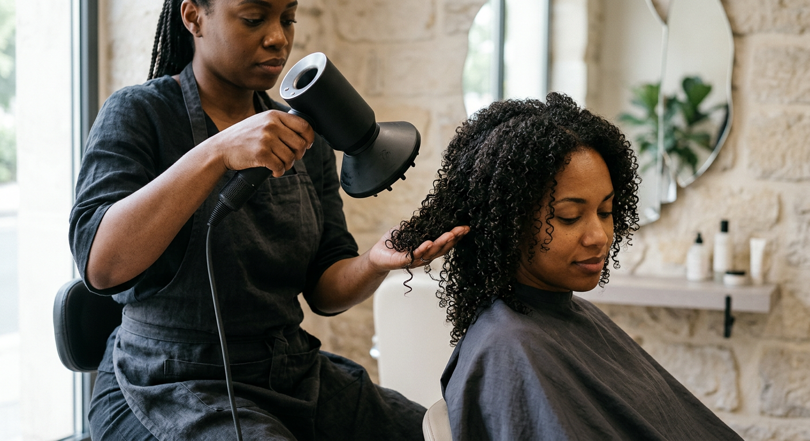
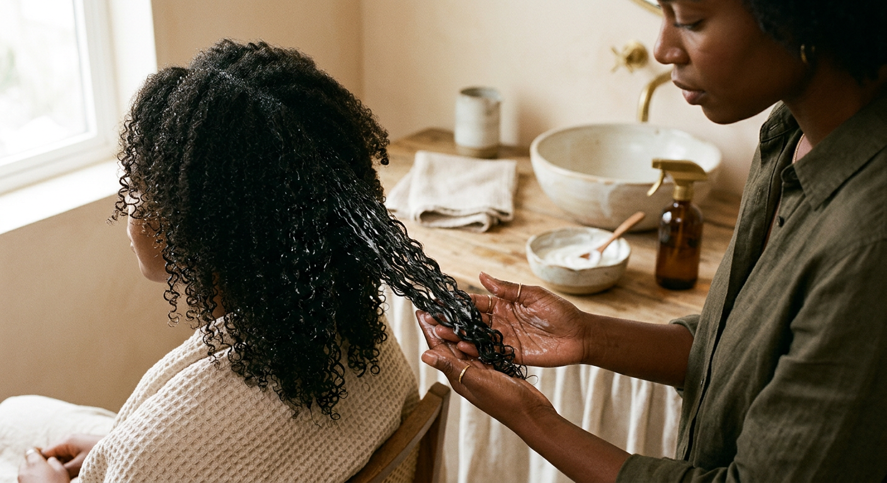
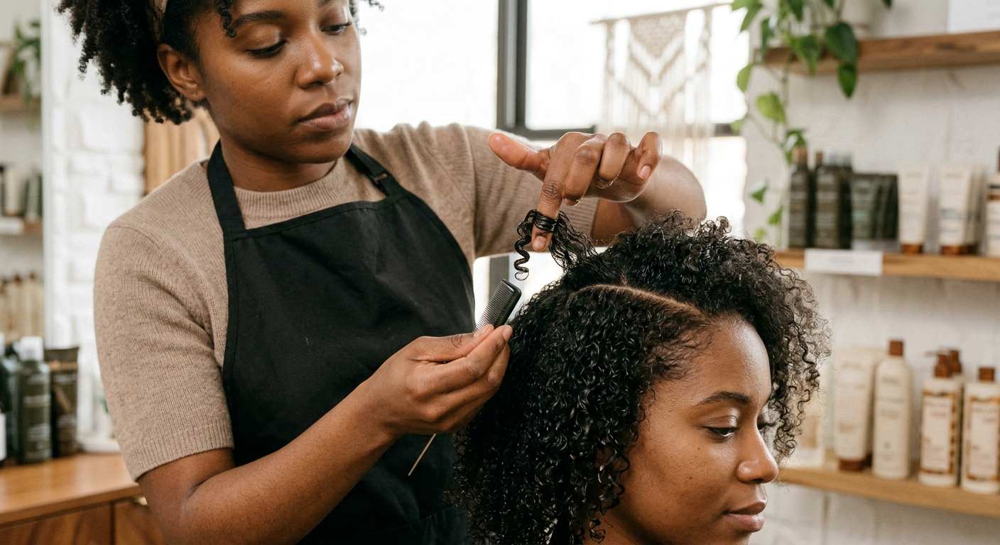
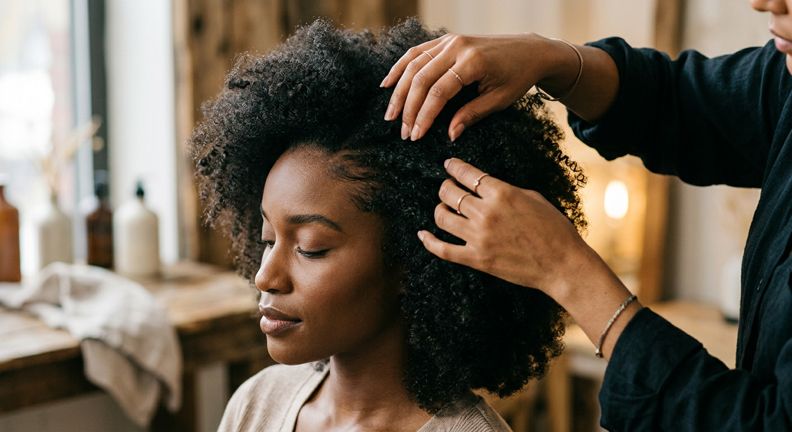
Intimate Details
In the quiet spaces between strands, beauty reveals itself. Close your eyes. Feel the texture. The coil of a curl is the most intimate geometry in nature—it spirals inward like a secret, like a prayer, like the way love grows.
We photograph these details not because they are small, but because they are everything.
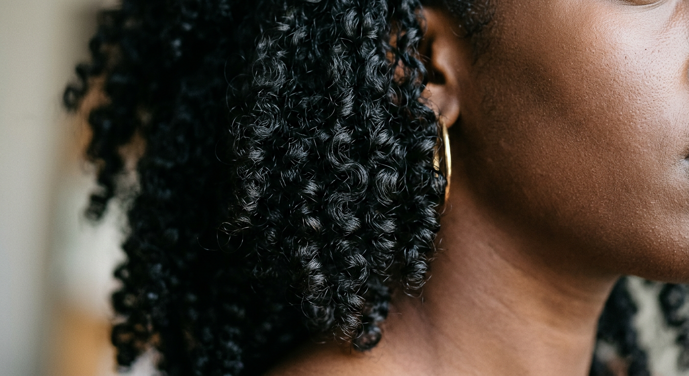
Coil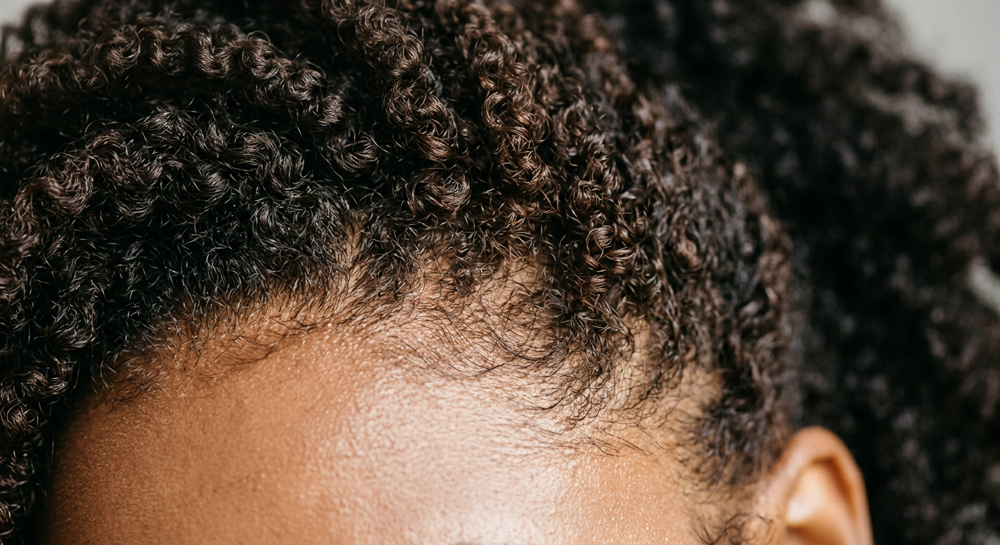
Wave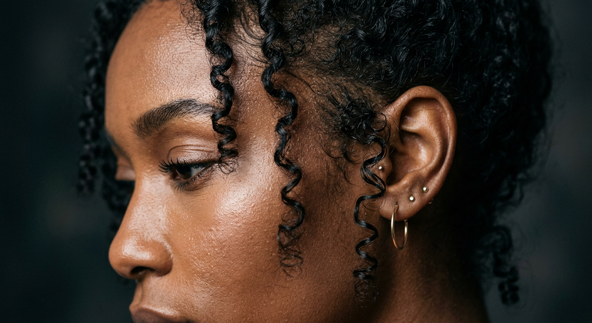
Strand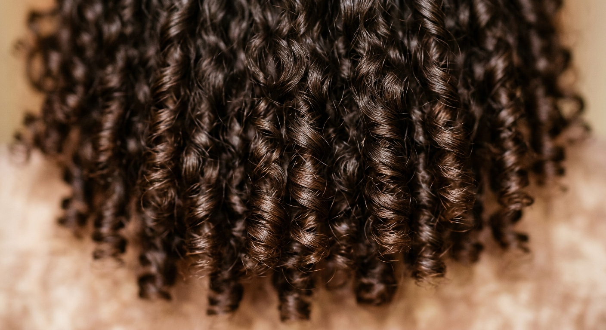
Curl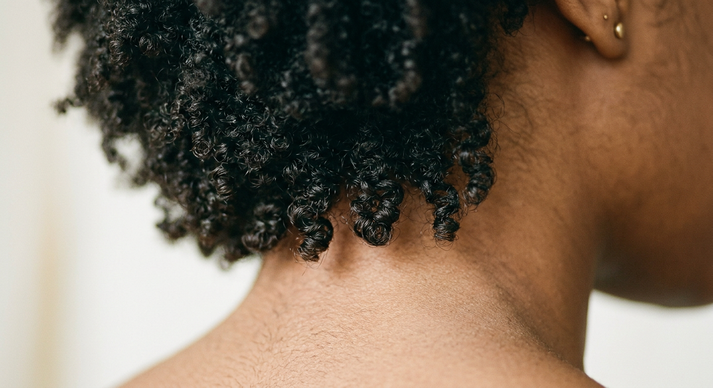
Root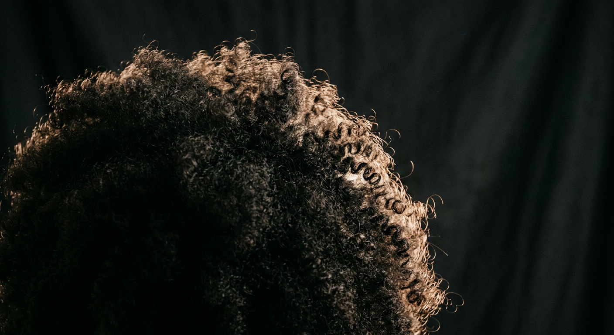
Crown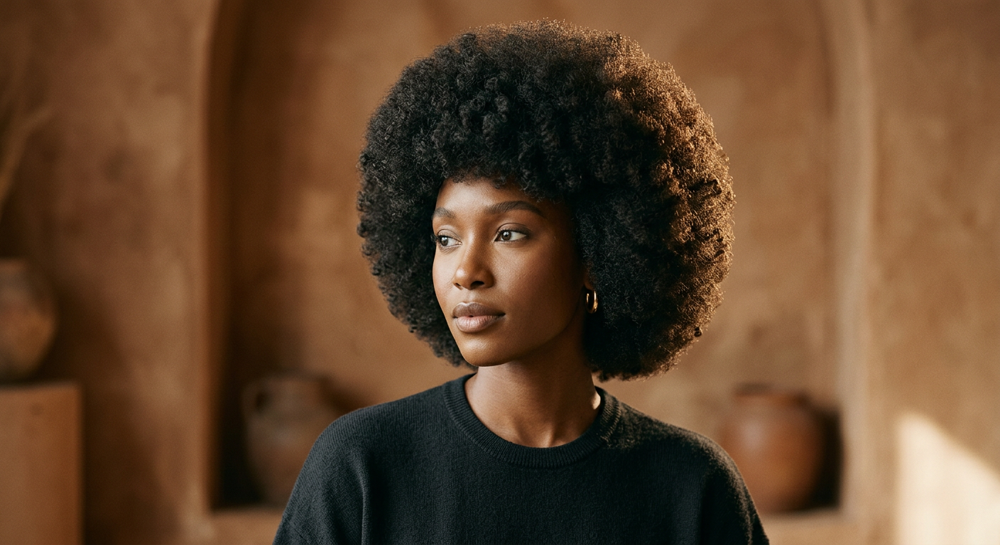
The Lookbook
Every portrait is a love letter to texture.
Eight souls.
Eight curl patterns.
Eight stories told through light and shadow.
This is not photography.
This is testimony.